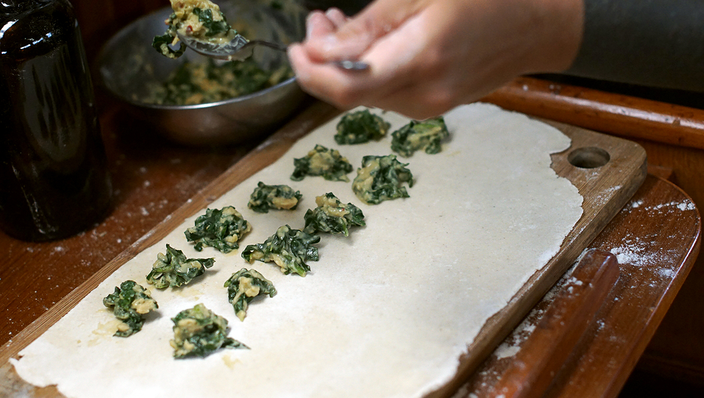
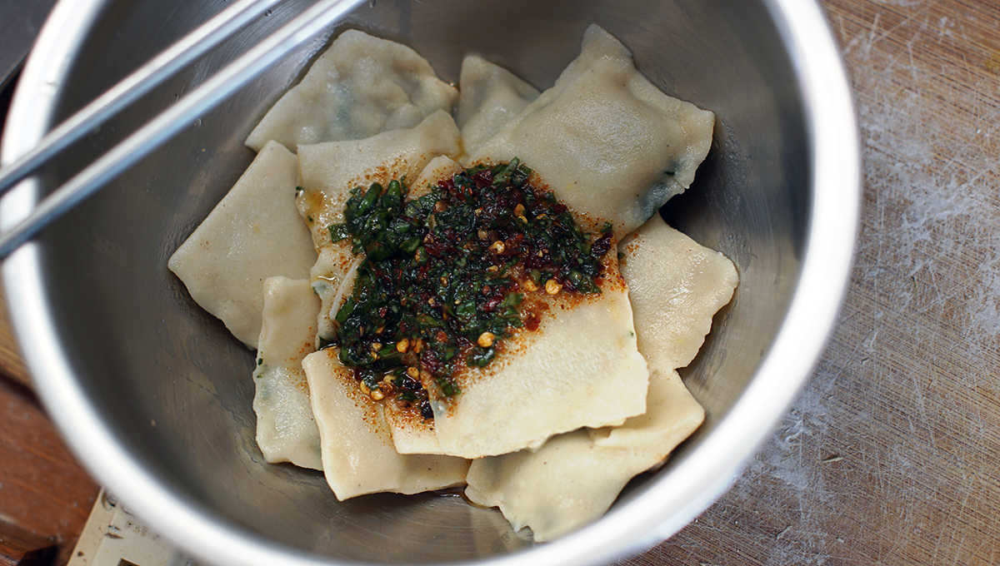

cheese and spinach ravioli
2 people — 40 minutes

Recipe location: Whangarei, New Zealand.
We have arrived in New Zealand, the land of plenty. All of the foods that we like and miss are here. Foods like nutritional yeast, miso and soba (to name a few). With a fully re-stocked pantry, I started to make faux-cheese again, a recipe from Vegan Richa that is simple to make and that I love. The recipe is for a cheese that can be cut into wedges, or that can be grated over pizza. I had an idea to use this recipe to make filling for ravioli, the difference being that I won't add any agar agar (a seaweed based powder that makes liquids gellify). Making your own dough is simple, the whole process will take you less than 40 minutes.

I got the idea to make ravioli from an old 70's book about the cooking of Italy. This book is one of many that we found in a thrift shop here in Whangarei, we bought all the ones that we could find. Devine & I like picking through them, drawing inspiration from the images and ingredients.

A lot of the recipes in these books use meat and dairy, but it's easy to swap these ingredients out for something else. In New Zealand, the groceries are plentiful and finding everything we need is a breeze. We hope you enjoy this recipe, and that you try and make Richa's original pepper jack cheese recipe too.
 chickpea flour 15 g
chickpea flour 15 g nutritional yeast 15 g
nutritional yeast 15 g arrowroot starch 22 g
arrowroot starch 22 g garlic powder 1.25 g
garlic powder 1.25 g onion powder 1.25 g
onion powder 1.25 g chili pepper flakes 1.25 g
chili pepper flakes 1.25 g spinach 20 g
spinach 20 g lemon juice 5 ml
lemon juice 5 ml apple cider vinegar 2.5 ml
apple cider vinegar 2.5 ml soy milk 180 ml
soy milk 180 ml
filling
- For the filling, mix all of the dry ingredients into a bowl, then add all the wet ones (including the chopped spinach) and stir well until evenly mixed.
- Heat a pan at medium heat, pour the filling into it. The mixture will thicken. When it does, transfer it back to a bowl and keep it aside for later.
 all purpose flour 120 g
all purpose flour 120 g water 160 ml
water 160 ml salt 1.25 g
salt 1.25 g
ravioli
- To make the dough, mix 1.25 g (1/4 tsp) of salt with 120 g (1 cup) of all purpose flour. Add 160 ml of water, knead the dough on a floured surface, working in extra flour if the dough is too sticky. Once you have a smooth ball of dough, wrap it up and let it rest for at least 10 minutes.
- Divide the dough into two pieces, and roll out the first half of the dough to make it as thin as possible — and as rectangular as possible. Roll out the second piece of dough into a similar size and thickess.
- On the first sheet of pasta, place a mound of filling of the faux-cheese and spinach mixture every 5 cm across and down the pasta (spaced out to look like a checker board).
- Dip your finger into a bowl of water, and make a line inbetween each row of filling (the water acts as a bond to hold the ravioli together).
- Place the second sheet of rolled-out pasta on top of the first one, pressing down firmly around the filling and along the wetted lines.
- With a knife (or ravioli cutter, if you feel fancy), cut the pasta into squares along the wetted lines. Keep separated pieces of ravioli aside.
- Bring a pot of water to a boil, and add the ravioli. Stir them gently to keep them from sticking to another another or on the bottom of the pot. Cook for 7-8 minutes or until fork tender.
- Serve with a light sauce, we made one with chilis pepper flakes, fresh basil and olive oil. A light tomato sauce would also be delicious.